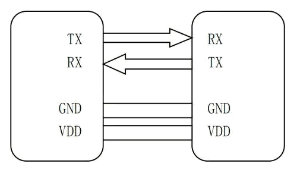
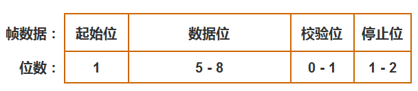
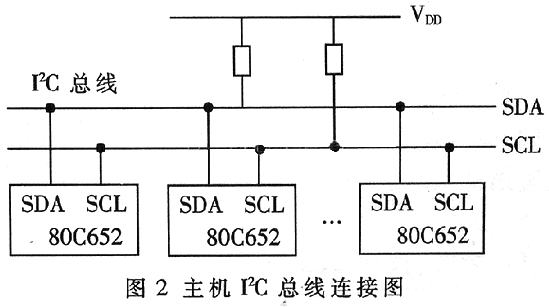

通用异步收发传输器（Universal Asynchronous Receiver/Transmitter)，通常称作UART。是一种异步全双工串行通信协议，它将要传输的资料在串行通信与并行通信之间加以转换。作为把并行输入信号转成串行输出信号的芯片，UART通常被集成于其他通讯接口的连结上，它不是像SPI和I2C这样的通信协议，而是微控制器中独立的物理电路或独立的IC。UART工作原理是将数据的二进制位一位一位的进行传输。
硬件连接比较简单，仅需要3条线，注意连接时两个设备UART电平，如电平范围不一致请做电平转换后再连接。如下图所示：
UART作为异步串口通信协议的一种，工作原理是将数据的字节一位接一位地传输。协议如下：
空闲位
起始位
数据位
奇偶校验位
停止位
波特率
| 特点 | UART | USART |
|---|---|---|
| 通信方式 | 只支持异步通信 | 可支持异步和同步通信 |
| 全双工通信 | 可以进行全双工数据传输 | 可以进行全双工数据传输 |
| 功能 | 通常只包括发送和接收功能 | 包括发送、接收、同步和异步等多种功能 |
| 数据线 | 一般只有两个数据线 | 在同步通信模式下需要多个数据线和时钟线 |
| 适用场景 | 适用于简单的低速异步通信应用 | 适用于更复杂的通信需求，包括同步和异步通信等 |
I2C（Inter-Integrated Circuit）是一种串行通信总线协议，用于在集成电路（IC）之间进行通信。它由两根线组成：串行数据线（SDA）和串行时钟线（SCL）。I2C总线采用主从结构，可以支持多个设备在同一条总线上进行通信。
I2C通信的特点包括简单、灵活和可靠，适用于连接多个低速设备。每个设备都有一个唯一的地址，主设备通过发送地址将数据传输给从设备，从设备接收并响应这些数据。
I2C总线在物理连接上非常简单，分别由SDA(串行数据线)和SCL(串行时钟线)及上拉电阻组成。通信原理是通过对SCL和SDA线高低电平时序的控制，来产生I2C总线协议所需要的信号进行数据的传递。在总线空闲状态时，这两根线一般被上面所接的上拉电阻拉高，保持着高电平。
开始条件：在时钟线保持高电平时，数据线从高电平转为低电平，即检测到一个下降沿，会形成一个开始条件；
停止条件：时钟保持高电平时，数据线从低电平转为高电平形成一个停止条件。
进行数据传输前也就是紧跟开始条件后，我们要传送地址字节，前7位是从设备地址（这也是为什么一个主机理论上最多能接127个从机，2^7-1），第八位是读/写标志位。每8bit传输完成，第九位是应答位。如果是主设备发送数据，就是从设备应答，如果是主设备读取数据，就是主设备应答
| 特性 | USRT | I2C | USB |
|---|---|---|---|
| 类型 | 串行 | 串行 | 串行 |
| 速度 | 快 - 高达几GHz | 中等 - 最高可达400kHz | 可变 - 低速、全速、高速、超速 |
| 传输协议 | 可使用多种协议，如UART、SPI等 | 特定I2C协议 | 特定USB协议 |
| 通信线数 | 3根或更多 | 2根 | 4根至更多 |
| 拓扑 | 点对点或多点 | 主从结构 | 主从结构 |
| 协议复杂性 | 中等 | 简单 | 复杂 |
| 主/从设备 | 可能有多个主设备和从设备 | 一个主设备和多个从设备 | 一个主设备和多个从设备 |
| 半双工/全双工 | 全双工 | 半双工 | 全双工或半双工 |
| 应用 | 通常用于远距离通信，如RS-485 | 适用于短距离通信，如传感器与微控制器之间 | 广泛应用于外设连接、存储设备等 |
SPI是串行外设接口（Serial Peripheral Interface）的缩写，是一种高速的，全双工，同步的通信总线，并且在芯片的管脚上只占用四根线，节约了芯片的管脚，同时为PCB的布局上节省空间，提供方便。SPI通常应用于EEPROM，FLASH，实时时钟，AD转换器，还有数字信号处理器和数字信号解码器之间。
SPI分为主、从两种模式，通信系统需要包含一个主设备（Master）和一个或多个从设备（Slave）。
主设备提供时钟，接收时钟的设备为从设备。SPI接口的读写操作由主设备发起。
SPI是全双工且没有速度限制，通常实现速率能达到甚至超过10 Mbps。
SPI接口一般使用四条信号线通信：
SDI（数据输入），SDO（数据输出），SCK（时钟），CS（片选）
SPI是单主设备（ single-master ）通信协议，这意味着总线中的只有一支中心设备能发起通信。
简单地讲就是设置SCLK时钟信号线的那种信号为有效信号。
它们的区别是定义了在时钟脉冲的哪条边沿转换（toggles）输出信号，哪条边沿采样输入信号，还有时钟脉冲的稳定电平值（就是时钟信号无效时是高还是低）。每种模式由一对参数刻画，它们称为时钟极（clock polarity）CPOL与时钟期（clock phase）CPHA。
具体如下：
此时空闲态时，SCLK处于低电平；数据采样是在第1个边沿，也就是SCLK由低电平到高电平的跳变；所以数据采样是在上升沿，数据发送是在下降沿。
此时空闲态时，SCLK处于低电平；数据发送是在第1个边沿，也就是SCLK由低电平到高电平的跳变；所以数据采样是在下降沿，数据发送是在上升沿。
此时空闲态时，SCLK处于高电平；数据采样是在第1个边沿，也就是SCLK由高电平到低电平的跳变；所以数据采集是在下降沿，数据发送是在上升沿。
此时空闲态时，SCLK处于高电平；数据发送是在第1个边沿，也就是SCLK由高电平到低电平的跳变；所以数据采集是在上升沿，数据发送是在下降沿。
注：数据采样=准备数据
CPOL=0：高有效，0到1，即上升沿是第一个边沿
CPOL=1：低有效，1到0，即下降沿是第一个边沿
GPIO（General Purpose Input/Output）是通用输入/输出的缩写，它是一种用于计算机系统与外部设备之间进行数字信号交互的接口。
每个GPIO引脚可以配置为输入或输出，并且可以通过编程进行数字信号的读取或写入。
#include "stm32xxxx.h" // 包含特定型号的 STM32 头文件
#include "stm32xxxx_hal.h" // 包含 STM32 HAL 库头文件
TIM_HandleTypeDef htim2; // 定义一个 TIM_HandleTypeDef 结构体变量用于配置 TIM2
void SystemClock_Config(void) {
// 在这里配置系统时钟
}
void TIM2_Init(void) {
TIM_MasterConfigTypeDef sMasterConfig;
TIM_OC_InitTypeDef sConfigOC;
TIM_HandleTypeDef htim;
// 启用 TIM2 时钟
__HAL_RCC_TIM2_CLK_ENABLE();
// 配置 TIM2
htim2.Instance = TIM2;
htim2.Init.Prescaler = 0;
htim2.Init.CounterMode = TIM_COUNTERMODE_UP;
htim2.Init.Period = 1000;
htim2.Init.ClockDivision = TIM_CLOCKDIVISION_DIV1;
// 初始化 TIM2
HAL_TIM_PWM_Init(&htim2);
// 设置 PWM 输出
sConfigOC.OCMode = TIM_OCMODE_PWM1;
sConfigOC.Pulse = 500; // 设置占空比，取值范围为 0 - 1000（0%-100%）
sConfigOC.OCPolarity = TIM_OCPOLARITY_HIGH;
sConfigOC.OCFastMode = TIM_OCFAST_DISABLE;
HAL_TIM_PWM_ConfigChannel(&htim2, &sConfigOC, TIM_CHANNEL_1); // 配置 TIM2 的通道 1
// 配置 TIM2 的定时中断
HAL_TIM_Base_MspInit(&htim2);
sMasterConfig.MasterOutputTrigger = TIM_TRGO_RESET;
sMasterConfig.MasterSlaveMode = TIM_MASTERSLAVEMODE_DISABLE;
HAL_TIMEx_MasterConfigSynchronization(&htim2, &sMasterConfig);
// 启动定时器
HAL_TIM_PWM_Start(&htim2, TIM_CHANNEL_1);
HAL_TIM_Base_Start_IT(&htim2);
}
void TIM2_IRQHandler(void) {
// 处理定时中断的逻辑
// ...
HAL_TIM_IRQHandler(&htim2);
}
int main(void) {
HAL_Init();
SystemClock_Config();
TIM2_Init();
while (1) {
// 主循环中的其他任务
}
}
| 触发模式 | 特点 | 应用场景 |
|---|---|---|
| 上升沿触发 | 信号从低电平到高电平时触发中断 | 检测按钮按下或传感器触发等高电平信号变化的场合 |
| 下降沿触发 | 信号从高电平到低电平时触发中断 | 检测按钮释放或传感器复位等低电平信号变化的场合 |
| 双边沿触发 | 信号的上升沿和下降沿均触发中断 | 需要同时检测上升沿和下降沿的场合，如通信协议的时钟信号 |
| 电平触发 | 信号维持相应电平期间持续触发中断 | 持续性信号的检测，如通信协议的数据线 |
| 特点 | I2C | SPI |
|---|---|---|
| 数据线数量 | 2 根（一根用于数据传输，一根用于时钟） | 多根（最少 4 根，通常包括数据线、时钟线、片选线等） |
| 传输速率 | 低速，最高速率通常在几百 kHz | 高速，速率可以达到几 Mbps 或更高 |
| 设备连接方式 | 总线拓扑结构 | 点对点连接或主从模式 |
| 主从设备数量 | 高，支持多个主设备和从设备同时连接 | 通常只有一个主设备操作多个从设备 |
| 硬件复杂性 | 相对较低，只需要实现 I2C 控制器和设备 | 相对较高，需要实现 SPI 控制器和设备 |
| 适用场景 |
- 传感器、EEPROM、温度传感器等小规模设备 - 系统中设备数量多、通信速率要求不高的场景 |
- 存储器、FPGA、音频编解码器等需要高速数据传输的设备 - 系统中设备数量少、通信速率要求较高的场景 |
#include "stm32f4xx.h"
void ADC_Configuration(void) {
GPIO_InitTypeDef GPIO_InitStructure;
ADC_InitTypeDef ADC_InitStructure;
// 使能 GPIO 时钟
RCC_AHB1PeriphClockCmd(RCC_AHB1Periph_GPIOA, ENABLE);
// 使能 ADC1 时钟
RCC_APB2PeriphClockCmd(RCC_APB2Periph_ADC1, ENABLE);
// 配置 ADC 输入引脚为模拟模式
GPIO_InitStructure.GPIO_Pin = GPIO_Pin_0; // 假设使用PA0作为ADC输入引脚
GPIO_InitStructure.GPIO_Mode = GPIO_Mode_AN; // 模拟输入模式
GPIO_InitStructure.GPIO_PuPd = GPIO_PuPd_NOPULL; // 不使用上下拉电阻
GPIO_Init(GPIOA, &GPIO_InitStructure);
// ADC 配置
ADC_InitStructure.ADC_Resolution = ADC_Resolution_12b; // ADC 分辨率为 12 位
ADC_InitStructure.ADC_ScanConvMode = DISABLE; // 非扫描模式
ADC_InitStructure.ADC_ContinuousConvMode = DISABLE; // 非连续转换模式
ADC_InitStructure.ADC_ExternalTrigConvEdge = ADC_ExternalTrigConvEdge_None; // 不使用外部触发
ADC_InitStructure.ADC_DataAlign = ADC_DataAlign_Right; // 右对齐输出
ADC_InitStructure.ADC_NbrOfConversion = 1; // 转换的通道数为1
ADC_Init(ADC1, &ADC_InitStructure);
ADC_Cmd(ADC1, ENABLE); // 启用 ADC1
// 配置ADC转换通道
ADC_RegularChannelConfig(ADC1, ADC_Channel_0, 1, ADC_SampleTime_3Cycles);
// 启动ADC校准
ADC_GetCalibrationFactor(ADC1);
while(ADC_GetCalibrationStatus(ADC1));
// 启动ADC转换
ADC_SoftwareStartConv(ADC1);
}
同步通信：在同步通信中，发送方和接收方的时钟是相互关联的，数据的传输和接收是基于一个共同的时钟信号进行同步的。发送方在每个时钟周期内按照时钟的节拍发送数据，接收方也按照同样的时钟节拍接收数据。双方通过时钟信号的同步来保证正确的数据传输。同步通信对时序要求较高，需要在通信双方之间建立稳定的时钟信号。
异步通信：在异步通信中，发送方和接收方没有共同的时钟信号进行同步。数据的传输和接收不依赖于特定的时钟信号，而是通过特定的起始位和停止位来标识数据的传输开始和结束。每个数据帧都有自己的起始和停止位，这样接收方可以通过检测起始和停止位来识别每个数据帧。异步通信相对较为灵活，但需要额外的控制位来标识起始和停止。